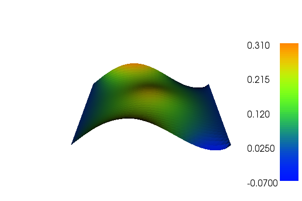
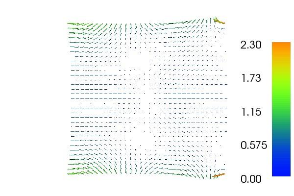

4. Dual-mixed formulation for Poisson equation¶
This demo illustrates how to solve Poisson equation using an alternative mixed formulation. In particular, it illustrates how to
- Use mixed and non-continuous finite element spaces
- Set essential boundary conditions for subspaces
4.1. Equation and problem definition¶
A formulation of Poisson equation involves introducing an additional (vector) variable, namely the (negative) flux: \(\sigma = - \nabla u\). The partial differential equations then read
with boundary conditions
The same equations arise in connection with flow in porous media, where thery are referred to as Darcy flow.
After multiplying by test functions \(\tau\) and \(v\), integrating over the domain, and integrating term \(\nabla \cdot \sigma \ v\) by parts, one obtains the following variational formulation: find \(\sigma \in \Sigma\) and \(v \in V\) satisfying
Compared to classical mixed formulation used in demo Mixed formulation for Poisson equation, the Dirichlet condition is here essential one and Neumann condition is natural.
To discretize the above formulation, two discrete function spaces \(\Sigma_h \subset \Sigma\) and \(V_h \subset V\) are needed to form a mixed function space \(\Sigma_h \times V_h\). A stable choice of finite element spaces is to let \(\Sigma_h\) be the discontinuous Raviart-Thomas elements of polynomial order \(k\) and let \(V_h\) be Lagrange elements of polynomial order \(k+1\).
We will use the same definitions of functions and boundaries as in the demo for Poisson’s equation. These are:
- \(\Omega = [0,1] \times [0,1]\) (a unit square)
- \(\Gamma_{D} = \{(0, y) \cup (1, y) \in \partial \Omega\}\)
- \(\Gamma_{N} = \{(x, 0) \cup (x, 1) \in \partial \Omega\}\)
- \(u_0 = 0\)
- \(g = \sin(5x)\) (flux)
- \(f = 10\exp(-((x - 0.5)^2 + (y - 0.5)^2) / 0.02)\) (source term)
With the above input the solution for \(u\) and \(\sigma\) will look as follows:
 {kind=link}
{kind=link}
4.2. Implementation¶
The implementation is split in two files, a form file containing the definition of the variational forms expressed in UFL and the solver which is implemented in a C++ file.
Running this demo requires the files: main.cpp,
MixedPoissonDual.ufl and CMakeLists.txt.
4.2.1. UFL form file¶
First we define the variational problem in UFL which we save in the
file called MixedPoissonDual.ufl.
We begin by defining the finite element spaces. We define two finite element spaces \(\Sigma_h = DRT\) and \(V_h = CG\) separately, before combining these into a mixed finite element space:
DRT = FiniteElement("DRT", triangle, 2)
CG = FiniteElement("CG", triangle, 3)
W = DRT * CG
The first argument to FiniteElement specifies the type of
finite element family, while the third argument specifies the
polynomial degree. The UFL user manual contains a list of all
available finite element families and more details. The * operator
creates a mixed (product) space W from the two separate spaces
DRT and CG. Hence,
Next, we need to specify the trial functions (the unknowns) and the test functions on this space. This can be done as follows
(sigma, u) = TrialFunctions(W)
(tau, v) = TestFunctions(W)
Further, we need to specify the sources \(f\) and \(g\)
(coefficients) that will be used in the linear form of the variational
problem. This coefficient needs be defined on a finite element space,
but CG of polynmial degree 3 is not necessary. We therefore define
a separate finite element space for these coefficients.
CG1 = FiniteElement("CG", triangle, 1)
f = Coefficient(CG1)
g = Coefficient(CG1)
Finally, we define the bilinear and linear forms according to the equations:
a = (dot(sigma, tau) + dot(grad(u), tau) + dot(sigma, grad(v)))*dx
L = - f*v*dx - g*v*ds
4.2.2. C++ program¶
The solver is implemented in the main.cpp file.
At the top we include the DOLFIN header file and the generated header file containing the variational forms. For convenience we also include the DOLFIN namespace.
#include <dolfin.h>
#include "MixedPoissonDual.h"
using namespace dolfin;
Then follows the definition of the coefficient functions (for
\(f\) and \(g\)), which are derived from the DOLFIN
Expression class.
// Source term (right-hand side)
class Source : public Expression
{
void eval(Array<double>& values, const Array<double>& x) const
{
double dx = x[0] - 0.5;
double dy = x[1] - 0.5;
values[0] = 10*exp(-(dx*dx + dy*dy) / 0.02);
}
};
// Boundary source for Neumann boundary condition
class BoundarySource : public Expression
{
void eval(Array<double>& values, const Array<double>& x) const
{ values[0] = sin(5.0*x[0]); }
};
Then follows the definition of the essential boundary part of the
boundary of the domain, which is derived from the
SubDomain class.
// Sub domain for Dirichlet boundary condition
class DirichletBoundary : public SubDomain
{
bool inside(const Array<double>& x, bool on_boundary) const
{ return x[0] < DOLFIN_EPS || x[0] > 1.0 - DOLFIN_EPS; }
};
Inside the main() function we first create the mesh and then
we define the (mixed) function space for the variational
formulation. We also define the bilinear form a and linear form
L relative to this function space.
// Construct function space
MixedPoissonDual::FunctionSpace W(mesh);
MixedPoissonDual::BilinearForm a(W, W);
MixedPoissonDual::LinearForm L(W);
Then we create the sources (\(f\), \(g\)) and assign it to the linear form.
// Create sources and assign to L
Source f;
BoundarySource g;
L.f = f;
L.g = g;
It only remains to prescribe the boundary condition for :math:u.
Essential boundary conditions are specified through the class
DirichletBC which takes three arguments: the function
space the boundary condition is supposed to be applied to, the data
for the boundary condition, and the relevant part of the boundary.
We want to apply the boundary condition to the second subspace of the
mixed space. This space can be accessed by the Subspace
class.
// Define boundary condition
Constant zero(0.0);
SubSpace W1(W, 1);
DirichletBoundary boundary;
DirichletBC bc(W1, zero, boundary);
To compute the solution we use the bilinear and linear forms, and the
boundary condition, but we also need to create a Function
to store the solution(s). The (full) solution will be stored in the
Function w, which we initialise using the
FunctionSpace W. The actual computation is performed
by calling solve.
// Compute solution
Function w(W);
solve(a == L, w, bc);
Now, the separate components sigma and u of the solution can
be extracted by taking components. These can easily be visualized by
calling plot.
// Extract sub functions (function views)
Function& sigma = w[0];
Function& u = w[1];
// Plot solutions
plot(u);
plot(sigma);
4.3. Complete code¶
4.3.1. Complete UFL file¶
DRT = FiniteElement("DRT", triangle, 2)
CG = FiniteElement("CG", triangle, 3)
W = DRT * CG
(sigma, u) = TrialFunctions(W)
(tau, v) = TestFunctions(W)
CG1 = FiniteElement("CG", triangle, 1)
f = Coefficient(CG1)
g = Coefficient(CG1)
a = (dot(sigma, tau) + dot(grad(u), tau) + dot(sigma, grad(v)))*dx
L = - f*v*dx - g*v*ds
4.3.2. Complete main file¶
#include <dolfin.h>
#include "MixedPoissonDual.h"
using namespace dolfin;
// Source term (right-hand side)
class Source : public Expression
{
void eval(Array<double>& values, const Array<double>& x) const
{
double dx = x[0] - 0.5;
double dy = x[1] - 0.5;
values[0] = 10*exp(-(dx*dx + dy*dy) / 0.02);
}
};
// Boundary source for Neumann boundary condition
class BoundarySource : public Expression
{
void eval(Array<double>& values, const Array<double>& x) const
{ values[0] = sin(5.0*x[0]); }
};
// Sub domain for Dirichlet boundary condition
class DirichletBoundary : public SubDomain
{
bool inside(const Array<double>& x, bool on_boundary) const
{ return x[0] < DOLFIN_EPS || x[0] > 1.0 - DOLFIN_EPS; }
};
int main()
{
// Create mesh
UnitSquareMesh mesh(32, 32);
// Construct function space
MixedPoissonDual::FunctionSpace W(mesh);
MixedPoissonDual::BilinearForm a(W, W);
MixedPoissonDual::LinearForm L(W);
// Create sources and assign to L
Source f;
BoundarySource g;
L.f = f;
L.g = g;
// Define boundary condition
Constant zero(0.0);
SubSpace W1(W, 1);
DirichletBoundary boundary;
DirichletBC bc(W1, zero, boundary);
// Compute solution
Function w(W);
solve(a == L, w, bc);
// Extract sub functions (function views)
Function& sigma = w[0];
Function& u = w[1];
// Plot solutions
plot(u);
plot(sigma);
interactive();
return 0;
}